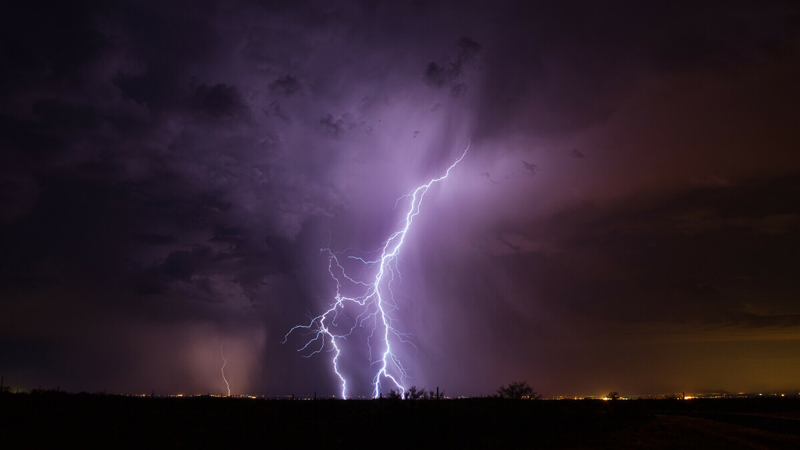

La electricidad natural es aquella que se produce de manera espontánea en la naturaleza sin intervención humana. Proviene de fenómenos físicos y atmosféricos en los que interactúan cargas eléctricas, campos magnéticos, radiación solar, partículas provenientes del espacio y procesos biológicos en ciertos organismos. Estos procesos eléctricos existen desde la formación del planeta y son fundamentales para la estabilidad del clima, la vida y la dinámica atmosférica.
Durante una tormenta, las corrientes ascendentes y descendentes dentro de las nubes generan fricción entre partículas de hielo, agua y vapor. Esta fricción separa cargas eléctricas: la parte inferior de la nube suele cargarse negativamente mientras que la superior se carga positivamente. Cuando la diferencia potencial entre la nube y el suelo o entre dos nubes es lo suficientemente grande, ocurre una descarga eléctrica: un rayo.
Los rayos pueden alcanzar temperaturas superiores a 30,000 grados Celsius, calentar el aire a velocidades extremas y producir truenos debido a la expansión explosiva del aire. Estos fenómenos son esenciales para la atmósfera, pues ayudan a liberar energía acumulada y a mantener el equilibrio eléctrico entre la Tierra y la ionosfera.
La Tierra posee un campo eléctrico natural que se extiende desde la superficie hasta la atmósfera superior. En un día sin tormentas, la superficie terrestre es ligeramente negativa y la atmósfera baja es positiva, generando una diferencia de aproximadamente 100 voltios por metro en condiciones normales.
Este campo es parte del sistema eléctrico global y se mantiene activo gracias a los millones de rayos diarios en todo el planeta, los cuales recargan constantemente la diferencia de potencial. La relación entre rayos y campo eléctrico global fue estudiada por científicos como Wilson y Kelvin.
Las auroras son uno de los fenómenos eléctricos naturales más espectaculares. Se producen cuando partículas cargadas del viento solar entran en contacto con el campo magnético terrestre y viajan a gran velocidad hacia los polos. Estas partículas chocan con átomos de oxígeno y nitrógeno en la atmósfera superior, excitándolos y provocando que emitan luz visible.
Las auroras pueden emitir tonos verdes, rojos, violetas y ocasionalmente azules dependiendo del tipo de gas involucrado y de la altura a la que ocurren las colisiones. Son una interacción directa entre el viento solar, la magnetósfera y la ionosfera, actuando como un inmenso circuito eléctrico planetario.
Muchas especies producen electricidad de forma natural para orientarse, comunicarse, cazar o defenderse. Este fenómeno se denomina bioelectricidad y está presente tanto en animales como en plantas.
El sistema nervioso funciona mediante señales eléctricas generadas por el movimiento de iones. Cada impulso nervioso es una onda de despolarización eléctrica que recorre las neuronas. El corazón también genera su propio ritmo eléctrico mediante el nodo sinoauricular. Sin electricidad biológica, la vida tal como la conocemos no podría existir.
Durante erupciones volcánicas, la fricción entre ceniza, roca pulverizada y gases sobrecalentados produce separación de cargas eléctricas, generando rayos volcánicos. Este fenómeno es similar al de las tormentas, pero ocurre dentro de columnas de ceniza a miles de grados de temperatura.